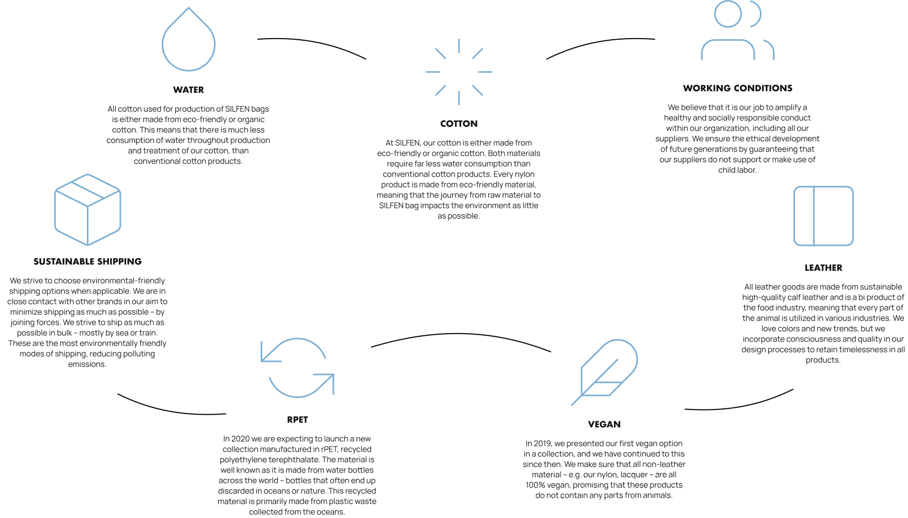

OUR COMMITMENT
TO SUSTAINABILITY
At SILFEN sustainability means putting action behind the words, considering all stakeholders and always aiming a little bit higher when creating another collection. As a young, global fashion brand, it is our duty to take care of the planet, not only for own sake, but for all future generations to come. Since day one, we have launched various initiatives to keep our carbon footprint to an absolute minimum as well as making conscious decisions concerning the social impact on the communities in the countries, in which we operate.
OUR VALUES
OUR VALUES
WATER
All cotton used for production of SILFEN bags is either made from eco-friendly or organic cotton. This means that there is much less consumption of water throughout production and treatment of our cotton, than conventional cotton products
FAIR LABOR
We believe it is our job to amplify a healthy and socially responsible conduct within our organization, including all our suppliers.
COTTON
At SILFEN, our cotton is either made from eco-friendly or organic cotton. Both materials require far less water consumption than conventional cotton products. Every nylon product is made from eco-friendly material, meaning that the journey from raw material to SILFEN bag impacts the environment as little as possible
SHIPPING
We strive to choose environmental-friendly shipping options when applicable. We are in close contact with other brands in our aim to minimize shipping as much as possible – by joining forces. We strive to ship as much as possible in bulk – mostly by sea or train. These are the most environmentally friendly modes of shipping, reducing polluting emissions
LEATHER
All leather goods are made from sustainable high-quality calf leather and is a bi product of the food industry, meaning that every part of the animal is utilized in various industries. We love colors and new trends, but we incorporate consciousness and quality in our design processes to retain timelessness in all products
VEGAN
In 2019, we presented our first vegan option in a collection, and we have continued to this since then. We make sure that all non-leather material – e.g. our nylon, lacquer – are all 100% vegan, promising that these products do not contain any parts from animals

RPET
In 2020 we are expecting to launch a new collection manufactured in rPET, recycled polyethylene terephthalate. The material is well known as it is made from water bottles across the world – bottles that often end up discarded in oceans or nature. This recycled material is primarily made from plastic waste collected from the oceans